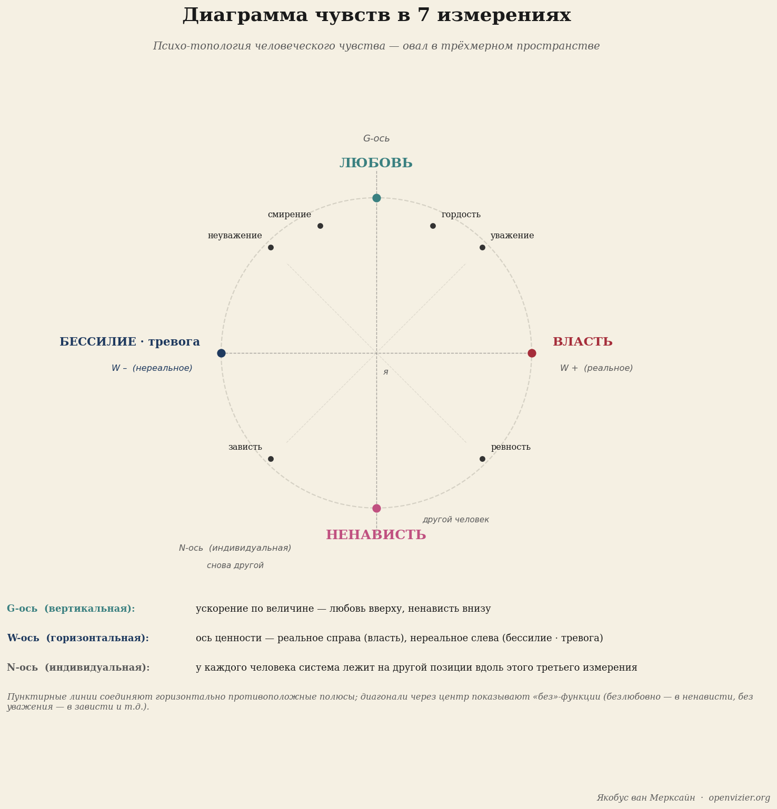
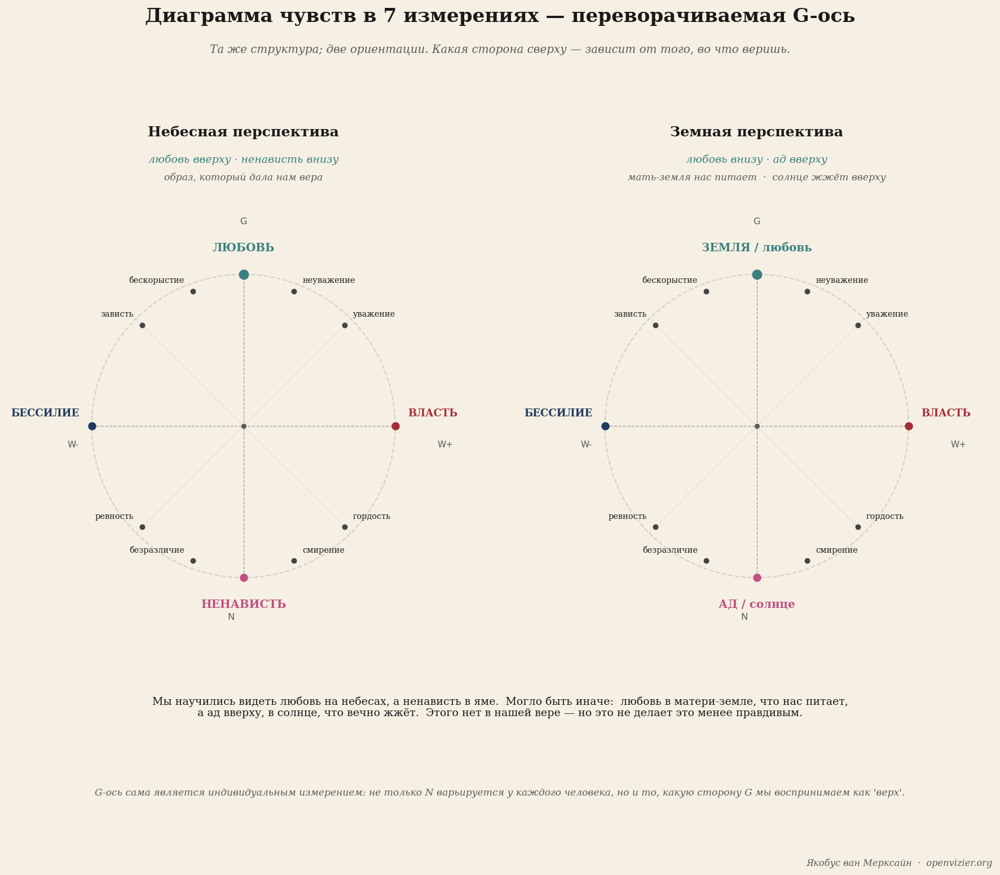

Семь измерений
7D-модель человеческого чувства
Теория · 14 мин чтения

Якобус ван Меркстейн
Представь, что ты составляешь карту внутренней жизни человека. Не психологическую типологию, не список черт или диагнозов, а настоящую карту — с пространственными соотношениями, с осями и расстояниями, с территориями, которые граничат друг с другом, и территориями, которые далеко разнесены. Топографию эмоциональной жизни.
Именно это пытается сделать 7-мерная модель чувств. Это карта — не самих чувств, чувства не поддаются поимке, — а структурных соотношений между чувствами. Как соотносятся гордость и зависть? В чём связь между властью и страхом? Когда любовь становится ненавистью и каким путём? Эти вопросы не декоративно-философские. Они практические. Кто знает карту, тот иначе ориентируется.
Здесь я объясняю её для обычного читателя, без математической базы. Полнота — в теоретической основе, которую я разработал отдельно. Это — введение, ориентация для тех, кто хочет понять структуру, прежде чем перейти к деталям.
Основная форма: овал, стоящий вертикально

Базовая форма модели — овал, стоящий вертикально. Не лежащий плоско на поверхности, а поставленный торчком, как позвоночник. У овала есть верх и низ, левая и правая стороны, и глубина — ось, которая уходит в изображение и выходит из него.
Верхняя точка овала — любовь. Нижняя точка — ненависть. Это самая фундаментальная структурная особенность модели: любовь и ненависть — не простые противоположности, стоящие по разные стороны черты. Это два полюса одной непрерывной дуги. И путей от любви к ненависти два: через правую сторону и через левую.
Это самая фундаментальная структурная особенность модели: любовь и ненависть — не простые противоположности, стоящие по разные стороны черты.
Эти два пути описывают два принципиально разных психологических мира.
Правая дуга: реальная сторона
Правая дуга идёт от любви (вверху) через самую правую точку к ненависти (внизу). Чувства на этой дуге укоренены в реальном отношении с внешним миром. Реальное в терминологии этой модели означает: чувство берёт начало в чём-то, что действительно существует, — вне тебя.
Чуть ниже любви на правой дуге стоит уважение. Не абстрактное уважение из правил вежливости, а конкретный опыт признания твоей собственной ценности другим человеком. Уважение — реальное чувство: его нельзя придумать самому, если его нет. Оно требует другой стороны.
Чуть ниже — гордость. Внутреннее признание собственного достижения или качества в соотношении с внешним миром. Гордость отличается от нарциссизма: гордость укоренена в том, что действительно было достигнуто. Нарциссизм — это нарратив, дрейфующий в отрыве от реальности.
В крайней точке правой дуги — самой правой точке, посередине по высоте — стоит власть. Способность быть эффективным, делать так, чтобы что-то происходило, оказывать влияние. Власть в этой модели нейтральна: она описывает позицию в структуре, а не моральную оценку. Власть можно использовать для добра или для зла. Позиция одна и та же.
За властью, на спуске к ненависти, стоит зависть. Зависть — реальное восприятие того, что у другого есть то, чего тебе самому не хватает и чего ты хочешь. Она реальна, потому что укоренена в фактически воспринятом различии. В ней есть активный компонент: зависть не желает, чтобы у другого этого не было, — она хочет, чтобы и у неё самой это было.
Чуть выше ненависти стоит злорадная зависть. И здесь различие между завистью и злорадной завистью становится принципиальным, потому что в обычной речи их путают. Злорадная зависть не желает, чтобы ты сам это имел. Она желает, чтобы у другого тоже этого не было. Это желание падения другого — безотносительно к собственной выгоде. Злорадная зависть несёт в себе ненависть как потенцию.
И затем — ненависть, в самом низу. Не как противоположность любви в детском смысле — люблю тебя, ненавижу тебя, — а как состояние максимальной негативной связи с реальностью вне себя. Активное отталкивание. Разрушительная ориентация.
Левая дуга: нереальная сторона
Левая дуга проходит параллельно правой, но с другой стороны. Чувства здесь — нереальные антиподы реальных чувств правой дуги. Нереальное не означает: не настоящее, не ощущаемое, менее значимое. Это означает: укоренённое во внутреннем состоянии, которое может существовать в отрыве от фактического внешнего мира.
Чуть ниже любви на левой дуге стоит неуважение к себе. Это слово заслуживает внимания. Неуважение к себе — не отсутствие уважения извне, это было бы реальным чувством — ситуацией, когда тебя действительно не уважают. Неуважение к себе как нереальное чувство — это глубокое переживание себя как не заслуживающего уважения. Оно может присутствовать вне зависимости от того, как к тебе относятся окружающие. Люди, которых все уважают, но которые сами ощущают себя глубоко неполноценными, знают это чувство изнутри.
Чуть ниже — отсутствие гордости. Переживание недостаточности, не связанное с тем, что ты фактически достиг. В крайнем проявлении — глубокий стыд: не как моральная эмоция, а как прямое внутреннее знание, что ты принципиально несостоятелен.
В крайней точке левой дуги стоят бессилие и страх, разделяя это место. В данной модели бессилие и страх — два аспекта одного явления: бессилие — структурная позиция, чувство, что ты не можешь справиться. Страх — временнóй компонент: переживание угрожающего, от которого бессилие не может защитить. Кто структурно переживает бессилие, тот воспринимает мир как угрожающий. Это и есть страх.
Дальше к ненависти — невозможность зависти. Это тонкое и мало обсуждаемое чувство: не желание того, что есть у другого, а неспособность желать — внутреннее состояние онемелости к собственной нехватке. Человек, который не может чувствовать собственную зависть, потерял связь с собственным желанием. Это не признак святости. Это признак закрытости.
Затем — невозможность злорадной зависти, чуть выше ненависти. Не активное желание, чтобы другой упал, а онемелость к чужому падению. Безразличие к несправедливости. То, что это уже не имеет значения.
И ненависть, внизу, общая для обеих дуг. Любовь вверху соединяет обе дуги. Ненависть внизу тоже соединяет их. В крайних точках различие между реальным и нереальным исчезает.
Три оси
Овал парит в трёхмерном пространстве, определяемом тремя осями.
Ось G идёт вертикально: от любви вверху до ненависти внизу в стандартной ориентации. G — от слова «величина», это размерность интенсивности. Чем выше по оси G, тем больше чувство движется в направлении любви. Чем ниже, тем больше оно сходится к ненависти.
Ось W идёт горизонтально: реальное справа, нереальное слева. W — от слова «ценность», это вопрос о том, укоренено ли чувство во внешнем мире или во внутреннем. В самой правой точке — власть. В самой левой — бессилие и страх. Они — зеркальные отражения друг друга: не качественные противоположности, а структурно изоморфны. Кто пережил власть, тот знает, каково бессилие. Не через рассуждение, а через структурную близость.
Ось N идёт вглубь — перпендикулярно плоскости, которую задают оси G и W, как бы уходя в изображение и выходя из него. У каждого человека вся структура овала находится на своей позиции по оси N. Ось N — индивидуальное измерение. Два человека, произносящих одно и то же слово — зависть, гордость, страх, любовь, — переживают соответствующее чувство из совершенно разных биографий. Зависть ребёнка, выросшего в бедности, и зависть ребёнка в достатке занимают одно геометрическое место в овале, но совершенно разные N-позиции. Они структурно идентичны, но биографически радикально различны.
Ось N делает модель динамичной: на протяжении жизни человек движется по оси N. Опыты, учебные процессы, травмы, восстановление — всё это сдвигает N-позицию. Структура овала остаётся; позиция человека в ней меняется.
Диагональные лос-функции
Самый неожиданный элемент модели — диагональные связи, лос-функции. Они проходят не горизонтально, справа налево, а по диагонали: от точки на правой дуге, прямо через центр овала, к точке на левой дуге, которая находится не на той же высоте.
Центр овала — нулевая точка: точка максимальной пустоты, внутренняя тишина в её крайнем проявлении — не та тишина, которая поддерживает, а та, которая свидетельствует о прекращении контакта с эмоциональной жизнью.
Диагональные пары: уважение (правый верх) через центр к невозможности злорадной зависти (левый низ). Гордость (правый верх) через центр к невозможности зависти (левый низ). Зависть (правый низ) через центр к отсутствию гордости (левый верх). Злорадная зависть (правый низ) через центр к неуважению к себе (левый верх).
Что это означает? Это описывает состояние, которое возникает, когда чувство разряжается через нулевую точку. Безлюбовность — это ненависть, но не отсутствие любви, а её активное отрицание, та ненависть, что прошла через нулевую точку. Бессилие живёт в страхе. Безуважие в топологическом смысле описывает состояние онемелости по отношению к другому, которое прошло через центр уважения.
Различие между неуважением к себе (горизонтальный антипод) и безуважием (диагональная лос-функция) — не семантическая игра слов. Это принципиальное различие. Неуважение к себе — активное чувство: прямое внутреннее ощущение своей несостоятельности. Безуважие — состояние полного отсутствия контакта с чувством уважения как таковым: эрозия, а не отражение. Оба порождают поведение, которое внешний мир называет «неуважительным», но внутренняя архитектура полностью разная — а значит, разной должна быть и адекватная реакция на них.
Наклоняемая ось G: небесная или земная?

Есть одно свойство модели, которое является наиболее радикальным, и я не хочу пройти мимо него молча: ось G наклоняема.
В стандартной ориентации любовь вверху, ненависть внизу. Это небесная перспектива — западная, христиански обусловленная ориентация. Бог наверху, зло внизу. Свет устремлён ввысь, тьма — вниз. Этот порядок настолько глубоко укоренён, что ощущается само собой разумеющимся, как будто любовь и «верх» соединены не случайно.
Но существует и земная перспектива. В ней любовь внизу — как мать-земля, которая нас несёт и питает, почва, на которой мы стоим, источник всей жизни. А ненависть наверху — как солнце, которое жжёт и выжигает то, что слишком долго стоит под его лучами. Земля питает. Солнце сжигает.
Это не релятивизм. Это топология. Одна и та же структура может существовать в нескольких ориентациях, не изменяясь по существу. Меняется смысл, который культура или отдельный человек придаёт позициям. И этот смысл сам по себе — психологический факт о человеке, нечто, что можно исследовать, понять и при необходимости скорректировать.
Не только культуры ориентируются по оси G по-своему. Индивиды тоже. Для того, кто вырос в традиции, где центральное место занимает любовь земли — крестьянка, знающая свою землю, рыбак, знающий своё море, — земная ориентация оси G мгновенно узнаваема. Для того, кто вырос в городской религиозной традиции, небесная ориентация самоочевидна. Оба варианта действительны. Ось G сама по себе — индивидуальная переменная. Это делает модель радикально личностной по своему характеру.
Что даёт карта
Карта полезна, если она показывает, где ты находишься и как пройти из А в Б. Топография эмоциональной жизни делает то же самое. Она показывает, что бессилие и зависть — не чувства одного рода, даже если оба болезненны. Она показывает, что злорадная зависть и зависть структурно родственны, но принципиально различны. Она делает видимым различие между чувством, укоренённым в реальности, и чувством, которое в ней не укоренено, — различием, которое в обыденной речи полностью утеряно.
И она даёт язык для разговора, который нам нужен как обществу: не разговора о том, «какие чувства хорошие, а какие плохие» — этот вопрос морализаторский и никуда не ведёт, — а разговора о том, откуда берётся чувство, каким путём оно появилось и чего требует. Этот разговор возможен только при наличии общей карты. Это она и есть.
Для тех, кто хочет читать дальше: 7-мерная схема чувств полностью разработана, включая математическую топологию и терапевтические применения, в работе Мыслительная база для 7-мерной модели чувств. Педагогическая разработка — что означают семь измерений для развития детей в разном возрасте — содержится в Манифесте об образовании и воспитании. Оба доступны для скачивания на openvizier.org.
Семь измерений чувства
Не список диагнозов. Не психологическая типология. Настоящая карта внутренней жизни — с осями, расстояниями, территориями.
«Кто знает карту, тот иначе ориентируется.»
Овал с двумя дугами
Базовая форма — овал, стоящий вертикально. Любовь вверху, ненависть внизу. Это не простые противоположности: это два полюса одной непрерывной дуги. Путей от любви к ненависти два — через правую сторону и через левую.
Правая дуга — реальные чувства: уважение, гордость, власть, зависть, злорадная зависть. Укоренены в чём-то, что существует вне тебя. Левая дуга — нереальные антиподы: неуважение к себе, отсутствие гордости, бессилие, страх. Могут существовать в отрыве от внешнего мира. Нереальное не значит «ненастоящее» — значит укоренённое внутри.
Три оси и диагональные связи
Ось G — вертикаль: от любви к ненависти, измерение интенсивности. Ось W — горизонталь: реальное справа, нереальное слева. Ось N — глубина: индивидуальная позиция каждого человека, биография, опыт, движение через жизнь.
Есть ещё диагональные лос-функции — связи через центр. Центр — нулевая точка, состояние максимальной внутренней пустоты. Безуважие и неуважение к себе — внешне похожее поведение, но принципиально разная архитектура. А значит, разный ответ.
Зависть и злорадная зависть — не одно и то же. Зависть хочет иметь то, что есть у другого. Злорадная зависть хочет, чтобы у другого тоже этого не было.
Наклоняемая ось и ценность карты
Ось G наклоняема. Небесная перспектива: любовь вверху — западная, христиански обусловленная. Земная перспектива: любовь внизу — как мать-земля, которая несёт. Обе действительны. Это не релятивизм. Это топология.
Карта не запрещает плохие чувства и не поощряет хорошие. Она показывает, откуда берётся чувство, каким путём оно появилось и чего требует. Этот разговор возможен только при наличии общей карты.